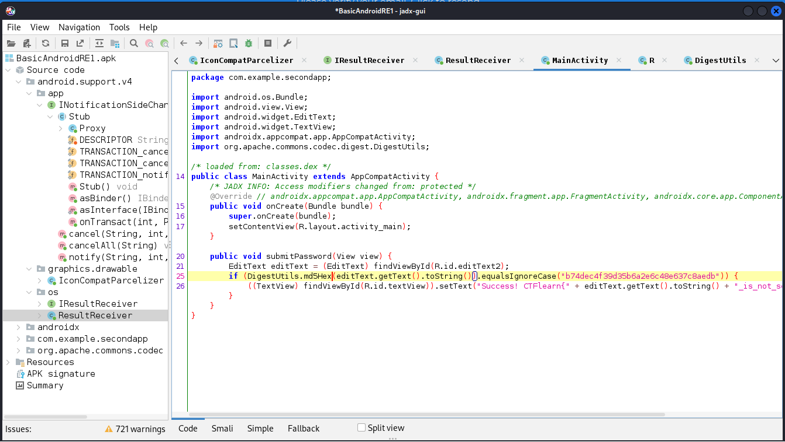
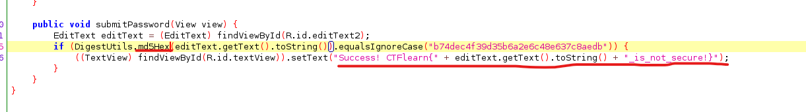
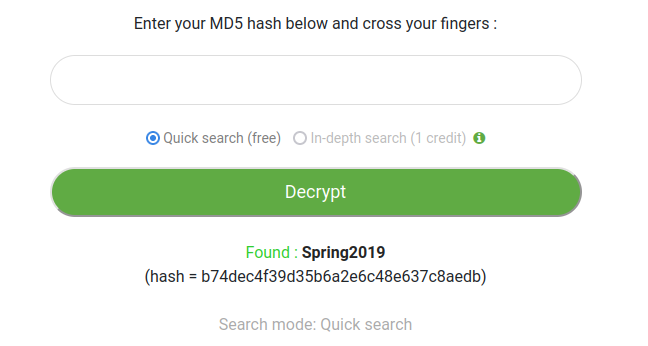
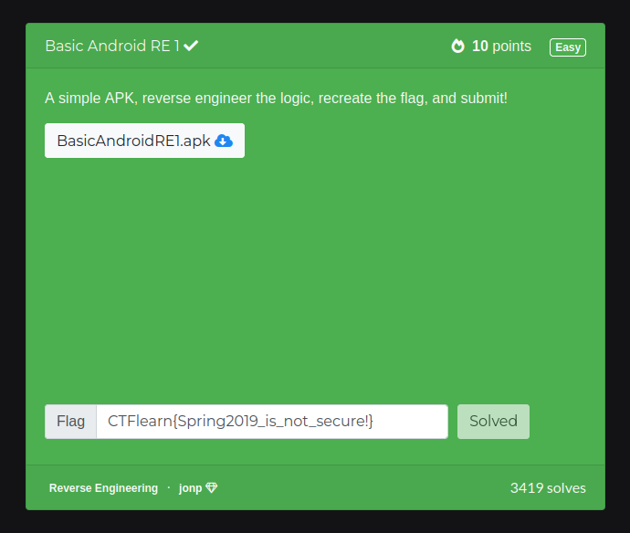

Zabawa w Reverse Engineering
2024-01-18
Pierwsze zadanie bazowało na aplikacji napisanej pod androida co pozwalało na szybkie znalezeinie aplikacji stworzonej idealnie pod takie programy czyli jadx. Po urzyciu narzędzia wyszukiwania udało mi sie w kodzie znaleść flagę.
Po analizie kodu zauwazyłem że prakującą wiadomością w fladze jest hash który został zahaszowany trochę już mało bezpieczną technologią MD5.
Na pierwszej stronie która wyskoczyła mi udało się złamać hash i zakończyć zadanie:
 
Drugie zadanie zajeło mi dużo więcej czasu przez próby i nauki różnych programów takich jak Ida pro oraz ghidra. Ostatecznie udało mi się rozwiązać problem tym pierwszym programem dlatego to rozwiązanie pokaże.
Na początku można zobaczyć funkcję main aplikacji. Nauczyłem się w tym programie bardzo przydatnej funkcji jaką jest zmiana na pseudokod (F5) co znacznie ułatwiło mi analizowanie kodu

W pseudokodzie można dostrzeć warunek if który sprawda czy podany przez użytkownika kod PIN zgadza się z wartością podaną i tak o to po tej wartości przyrównywalnej po nitce doszedłem do PINu który był rozwiązaniem zadania.